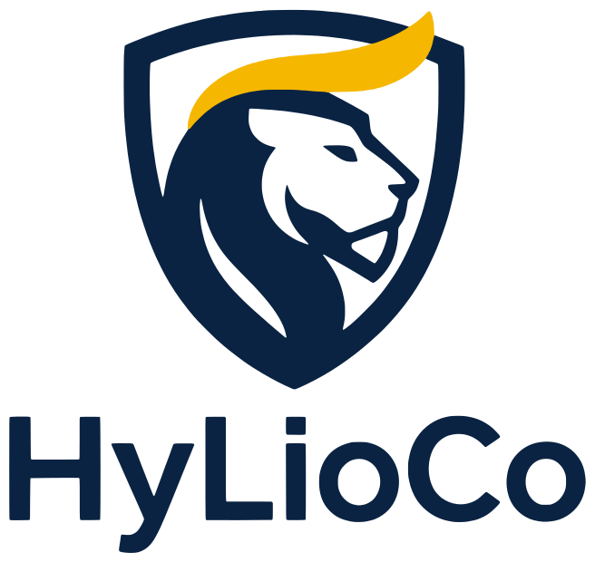
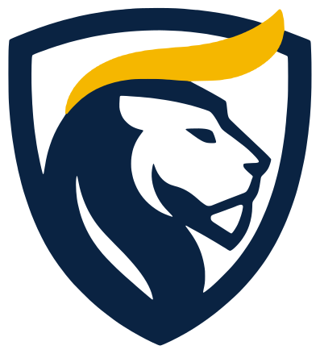

Logo
Le lion dans son bouclier, la crinière d'or et le nom HyLioCo. Fichiers vectoriels (SVG) : nets à toutes les tailles.






Couleurs
Le marine porte la marque, l'or la met en valeur. L'or reste un accent : jamais en grande surface derrière du texte.
Marine#0A2342 · RVB 10 35 66
Couleur principale : logo, titres, fonds
Couleur principale : logo, titres, fonds
Or#F5B700 · RVB 245 183 0
Accent : crinière, boutons, points forts
Accent : crinière, boutons, points forts
Ivoire#F7F3EA · RVB 247 243 234
Fond clair, texte sur marine
Fond clair, texte sur marine
Bleu roi#1C4A7A · RVB 28 74 122
Couleur secondaire, liens, détails
Couleur secondaire, liens, détails
Nuit#061528 · RVB 6 21 40
Dégradés et fonds très sombres
Dégradés et fonds très sombres
Typographie
Outfit, une police géométrique et arrondie, cousine du logo. Gratuite sur Google Fonts.
Quelque chose se prépare.Titres · Outfit ExtraBold (800)
Une nouvelle marque arrive bientôt.Sous-titres et boutons · Outfit SemiBold (600)
Le texte courant reste simple et lisible, en phrases courtes. On vouvoie le visiteur.Texte · Outfit Regular (400)
Règles d'usage
Pour que la marque reste reconnaissable partout.
- Laisser autour du logo un espace libre au moins égal à la hauteur du « H ».
- Logo principal sur fond clair, logo inversé sur fond marine ou sombre.
- Taille minimale : 120 px de large pour le logo complet, 24 px pour l'emblème.
- Ne pas déformer, pivoter ni recolorer le logo hors de la palette.
- Ne pas poser le logo sur une photo chargée sans fond uni.
- Ne pas utiliser l'or pour du texte long ou sur fond ivoire.